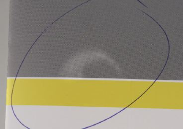
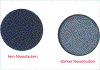
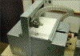
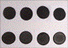

STAUBEN DES PAPIERS
|
Unter Stauben versteht man das Ablösen von
ungebundenen bzw. schlecht gebundenen Fasern und
Füllstoffpartikeln von der
Papieroberfläche, die sich auf dem Drucktuch
und Druckform ablagern. Dieser nur bei
Naturpapieren auftretende Fehler macht sich in
einem gestörtem Druckausfall bemerkbar (Abb. 1
und Abb. 2).
Häufige, verkürzte Waschintervalle in der
Druckmaschine sind die Folge.
|

|
Abb. 1: Druckbildausfall aufgrund von
Staubablagerung auf im Drucktuch.
|
|
|
|
Mögliche Ursachen:
|
|
|
|
Abb. 2: Ein zum Stauben neigender
Druckbogen.
|
|
|
|

|
|
Abb. 3: Unterschiedlich starkes Nassstauben bei
verschiedenen Papierqualitäten.
|
|
|
|

|
|
Abb. 4: Trockenstaubprüfgerät.
|
|
|
|

|
|
Abb. 5: Staubpräparate verschiedener
Papierqualitäten.
|
|
|
|

|
|
|
|
|
|

|
|
|
|
|
|

|
|
|
|
|
|

|
|
|
|
|
|
|
Bei schlechter Bindung der Fasern in der
Papieroberfläche - bedingt durch ungenügende Masse
oder Oberflächenleimung - kann ein Stauben des Papiers
auftreten.
Eine zu hohe Temperatur der ersten Trockenzylinder in der
Papiermaschine machen die Fasern spröde und es wird
dadurch ein Stauben des Papiers begünstigt.
Füllstoffhaltige Papiere neigen bei ungenügender
Masse- bzw. Oberflächenleimung zum Pigmentstauben.
Schnittstaub entsteht durch stumpfe oder falsch eingestellte
Messer beim Längs- oder Querschnitt im Querschneider,
beim Schneiden der Bogen auf einem Planschneider oder beim
Schneiden von Rollen mit stumpfen Rotationsmessern.
Nicht papierbedingte Ursachen können Ablagerungen auf
dem Drucktuch der Offsetmaschine von eingetrockneter
Druckfarbe, Fasern der Feuchtwalzenbezüge oder von
Putzlappen und Druckbestäubungspuder sein.
|
Mögliche Abhilfen:
|
|
Bei Verunreinigungen des Drucktuches und dadurch bedingter
Beeinträchtigung der Druckqualität muss zuerst
geprüft werden, welcher Art die Ablagerungen sind.
Wird eine Butzenbildung durch Ablagerung von eingetrockneten
Farbteilchen festgestellt, so wird in den meisten
Fällen nur eine sorgfältige Reinigung der
betroffenen Maschinenteile und ein Auswechseln der Farbe
Abhilfe schaffen.
Zeigt sich die Ablagerung von Faser- und
Füllstoffteilchen vornehmlich am Rande des
Druckformates, so kann man auf Schnittstaub schließen.
Man kann versuchen, die Schnittflächen der Stapel mit
einem glyceringetränkten Lappen abzuwischen, um so den
Kantenstaub zu entfernen. Auf keinen Fall sollte man die
Schnittflächen abbürsten, dabei würde
zusätzlicher Staub entstehen.
Verschiedentlich wurden Versuche unternommen, in
Druckmaschinen Absaugvorrichtungen anzubringen, um eventuell
anfallenden Staub zu entfernen. Diese Verfahren konnten sich
jedoch bis jetzt nicht durchsetzen. Wird eine Neigung zum
Stauben des Papiers festgestellt, so kann lediglich durch
einen Leerlauf vor dem eigentlichen Druckgang - mit
Druckspannung, aber ohne Wasserführung - Abhilfe
geschaffen werden.
|
Beispiel(e):
|
|
Bestimmung der Nassstaubneigung:
Im Labor sollte durch Nassstaubtests geprüft werden, ob
die aufgetretenen vermehrten Waschintervalle während
einer Zeitungsproduktion auf papierbedingte Ursachen
zurückzuführen sind.
Die Bestimmung der Nassstaubneigung erfolgte nach der
GFL-Methode unter Verwendung des
GFL-Nassstaubtestgerätes. Das heißt, Papiere, die
bei einem solchen Test ungünstige Ergebnisse liefern,
führen überwiegend auch im Praxisdruck zu
erhöhten Waschintervallen aufgrund von papierbedingten
Ablagerungen auf den Drucktüchern (siehe auch
Linting).
Pro zu prüfender Papiersorte und -seite werden dabei
200 Blatt DIN A 4 einseitig mittels einer
mikrogekörnten Stahlwalze befeuchtet. Werden durch
diesen Vorgang Partikel aus dem Papier herausgelöst
bzw. herausgewaschen, so sammeln sich diese im
Flüssigkeitsbehälter des Prüfgerätes.
Nach dem Testdurchlauf, also nach dem Durchlauf von 200
Blatt, werden der Inhalt des Flüssigkeitsbehälters
durch ein schwarzes Filterpapier filtriert und eventuell aus
dem Papier gelöste Partikel aufgesammelt. Nach der
Trocknung des Filters, wird die Nassstaubneigung
messtechnisch oder auch visuell ausgewertet (Abb. 3).
Die Bestimmung der Trockenstaubneigung:
Die Neigung eines Papiers zum Trockenstauben kann man mit
Hilfe des FOGRA Trockenstaubprüfgeräts (Abb. 4)
erfassen. Pro zu prüfender Papiersorte und -seite wird
die Oberfläche von 10 Blatt im Format DIN A 3
ganzflächig berührungslos im
Trockenstaubprüfgerät abgesaugt. Lösen sich
durch den Absaugvorgang lose aufliegende bzw. schlecht
gebundene Partikel von der Papieroberfläche, so werden
diese auf einem schwarzen Filterpapier gesammelt. Das Filter
wird nach dem Versuchsablauf visuell bzw. messtechnisch
mittels Kontrastmessung ausgewertet. In der Abbildung 5 sind
Staubpräparate verschiedener Papierqualitäten
dargestellt.
|
Allgemeine Hinweise:
|
|
Für den Reklamationsfall:
Unbedruckte Muster und Vergleichsmuster sicherstellen.
Für Trockenstauben 10 Blatt DIN A3 pro Seite. Für
Nassstauben 200 Blatt DIN A4 pro Seite.
Tesaabzüge der Ablagerungen auf dem Drucktuch
anfertigen.
Vor Ort die Kantenstaubneigung mit einem schwarzen Samttuch
prüfen.
Produktionsdaten protokollieren.
Ergänzende Literatur:
KIRMEIER, M.:
Einflüsse auf das Nassstauben (Linting).
In: FOGRA-Mitteilungen, 49 (2000), Nr. 159, S. 38-47
MANGIN, P.J.:
Kritischer Überblick über den Einfluss von
Druckparametern auf die Staubneigung von Papier.
In: Das Papier, 46 (1992), Nr. 2, S. L6
|
|
|
|
|
|
|
Kontakt:
pantel@fogra.org
|
Sta-pan-200111
|